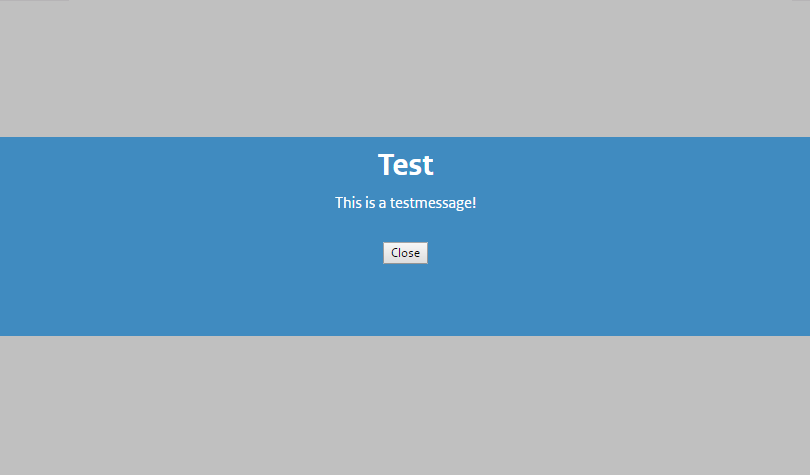

Simple dialogs with AngularJS and TypeScript
While working an Angular (1) web app I ran into the age-old problem of showing the user notifications when certain conditions are met. Show them a little pop-up, in simple terms.
So what does it take to show a popup? We know the dialog element exists but cannot be used in this case due to browser requirements. The easiest way I could think of is adding a fixed positioned div the the user on top of all other content. Add some CSS in there to make it look nice and we have dialogs.
There are a number of ways this can be achieved in Angular and for my case I chose a service. So what does this service look like? Please note that we are using TypeScript, which is like javascript, but not actual javascript. It makes javascript better.
Let's start by adding a class that represents the service:
///
module DemoApp.Services { export class DialogService { constructor() { } } }
Which we can register as a service in the root of our app.
///
var app = angular.module("demoApp", [""]);
app.service("dialogService", DemoApp.Services.DialogService);
We add a service to our app called dialogService and pass its constructor function along with it. Angular now knows about our dialog service and we can inject it where ever we want.
Except... Our service doesn't do anything yet!
Let's add a function that creates a dialog similar to an alert(...);. Just some text and a button to close the dialog. Add the following function to the DialogService class.
showModalMessage = (title: string, text: string, onClose: () => void):void => { }
The dialog needs a title, some text and to let us respond to the user closing the dialog we have a callback function onClose. The function and callback both return void, they have no return values.
Now for the code that creates a the elements that make up our fancy new dialog. Let's dive right in.
var body = document.body;
var dialogElement = document.createElement("div"); dialogElement.classList.add("dialog");
var dialogContent = document.createElement("div"); dialogContent.classList.add("dialog-content");
var titleElement = document.createElement("h1"); titleElement.innerHTML = title; dialogContent.appendChild(titleElement);
var textElement = document.createElement("p"); textElement.innerHTML = text; dialogContent.appendChild(textElement);
var okButton = document.createElement("button"); okButton.innerHTML = "OK";
var typeAttr = document.createAttribute("type"); typeAttr.value = "button";
okButton.attributes.setNamedItem(typeAttr);
dialogContent.appendChild(okButton);
dialogElement.appendChild(dialogContent);
var onOkClicked = () => { okButton.removeEventListener("click", onOkClicked); body.removeChild(dialogElement);
onClose(); }
okButton.addEventListener("click", onOkClicked);
body.appendChild(dialogElement);
From top to bottom. We generate two div elements, one as a container and one for the dialog content. Add in a header with an h1 element and a p for the content. Create a button that calls the callback function, cleans up the eventlistener and removes the generated elements when clicked. Finally we add the whole lot to the body element to get it rendered.
To make it behave like a dialog, we also need some CSS. You can style this anyway you want but to get you started I have some ready-made LESS that you can use (or maybe not, then I'm sorry for using LESS instead of CSS).
.dialog { position: fixed; width: 100%; min-height: 200px; top: 15%; background-color: rgb(0, 148, 255); z-index: 1;
.dialog-content { position: relative; max-width: 500px; padding: 10px; margin: 0 auto; z-index: 2; color: #fff; text-align: center;
h1, p { padding: 0; margin: 0 0 10px 0; }
button { margin-top: 20px; } }
&:after { content: ""; position: fixed; top: 0; left: 0; width: 100%; height: 100%; background-color: rgba(128, 128, 128, 0.5); z-index: -1; } }
Notice the position: fixed; to lock it into place and ignore any scrolling that will happen. There is no escaping this message. The other noteworthy thing is the :after styling. This renders a semi-transparent overlay behind the dialog we are showing to make sure the user cannot interact with anything else on the page.
Using the styles above should give you something like this:

Actually using the dialogService requires that you inject it into other Angular modules (a controller in this case) like this:
module DemoApp.Controllers {
export class DemoController {
dialogService: RegistrationApp.Services.DialogService;
static $inject = ["dialogService"] constructor(dialogService: DemoApp.Services.DialogService) { this.dialogService = dialogService; }
doSomeWork = () => { // Important stuff happens here...
this.dialogService.showModalMessage("Test", "This is a testmessage!", () => { }); } } }
The callback is just an empty function in the example but you can pass in any function that doesn't take any arguments and returns void.
We now have a single reusable source of dialogs that can be used anywhere in your angular app! Enjoy!